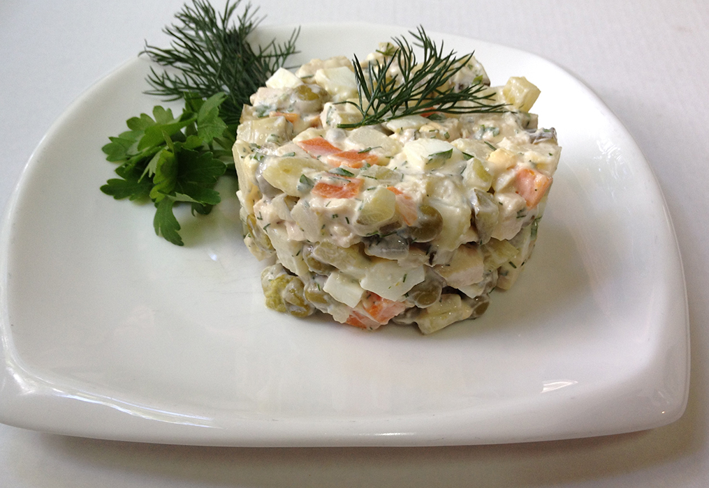

Olivye

Description
It is Russian salad, creamy mixture of potatoes, pickles and many other ingredients.
Ingredients:
- 4 medium potatoes
- 2 carrots
- 6 eggs
- 1 sausage
- 6 pickles
- 1/2 cup green peas
- salt
- black pepper
- 1 cup mayonnaise
Steps:
- Place the potatoes, carrots and eggs into a medium-sized pot, cover with water, add some salt and bring to a boil.
- Once the water boils simmer the vegetables over medium-high heat for 10 minutes and remove the eggs only.
- Run the eggs under cold water and set aside.
- Continue to boil the potatoes and carrots until tender, remove and set aside to cool.
- Meanwhile cut the sausage and pickles into small cubes.
- Once the potatoes and carrots are cool enough to handle peel the skins off and cut into small cubes.
- Shell the eggs and dice into cubes too.
- Place all ingredients into a medium-sized bowl, add mayo and little salt and mix. Serve.